Primary Metric
12.98 dB PSNR
-0.52 vs baseline
Goal: document a completed legacy run slice and test whether reported quality beats a simple baseline.
reviewed baseline-qualityimage compression
Date: 2024-02-20
Git commit: 58867d69e17e31406f0dcad3f1b143c3c76c4831
Author: nadavo11
Project/task: Variable-Rate-Remote-Image-Inference-RNN / image compression
Repro links: opts.py, evaluation.py, requirements.txt
Fixed sample list: cifar10_test_fixed_prova_1_to_4. Click any panel to enlarge.
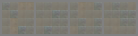
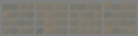
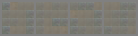
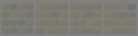
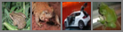
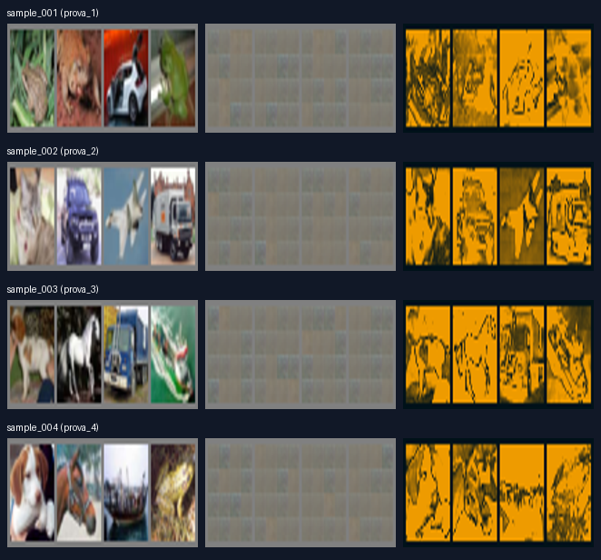
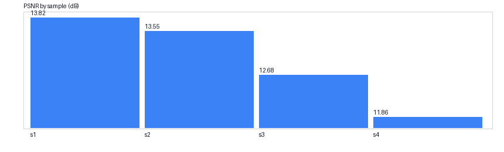
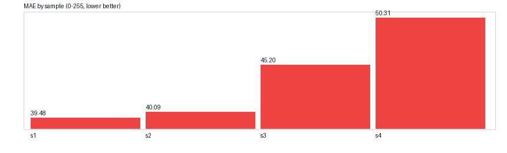
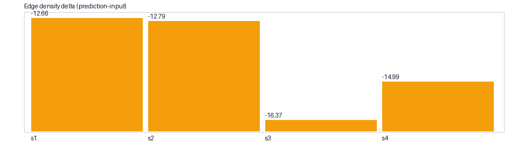
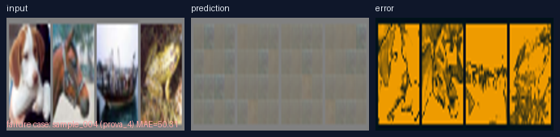
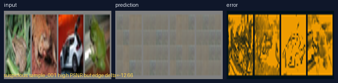
| Full outputs | test_imgs |
|---|---|
| Raw logs path | train.py |
| Checkpoint folder | C:/Users/nadav/PycharmProjects/Variable-Rate-Image-Inference-RNN/saved_models/ |
| Repo root | Variable-Rate-Remote-Image-Inference-RNN@58867d6 |